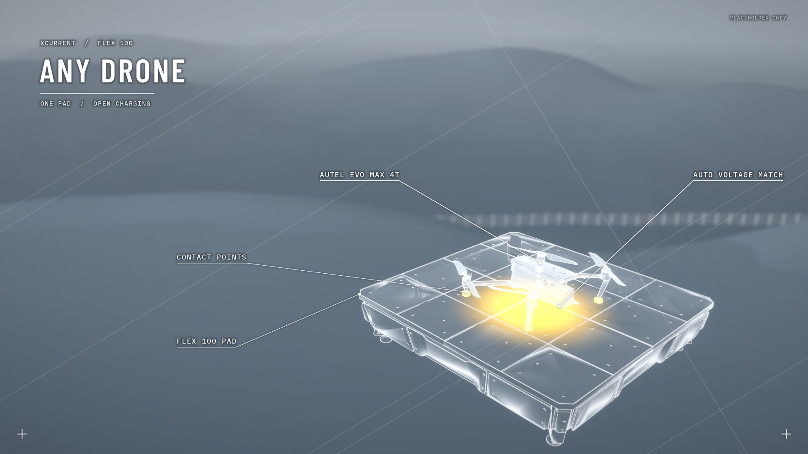

XCurrent border film: 5 looks x 3 shots
26.10.26 · Blender EEVEE renders from the real scene assets (Flex 100 pad, Autel EVO Max 4T). Type is placeholder copy. Click any frame for full size.
כחול פלדה D1 Steel Blue
Closest to Steelfin, recoloured: cool blue-grey world, ghost-glass objects with white hairline outlines, cyan only for charging.


צפחה לילית D2 Midnight Slate
Dark navy-slate night-ops: white glowing edges over faint glass, rim lights, cyan energy with soft bloom.


טופוגרפיה בהירה D3 High-Key Topo
Inverted: pale mist world drawn with contour lines, dark graphite objects with a thin cyan edge. Technical-diagram feel.


רשת הולוגרפית D4 Holo Grid
Mid blue-grey: land as a grid, water as fine parallel lines, objects as white line work over a translucent solid. Energy white-blue.


חימר וזכוכית D5 Clay and Glass
Soft blue-grey matte clay world, gentle daylight, milky glass pad with inner glow, semi-matte white drones. Product-commercial.


בונוס: אקסנט צהוב D1 S1 yellow
Identical to D1 S1, only the energy accent switched to XCurrent brand yellow (#e0b43a) instead of cyan.

